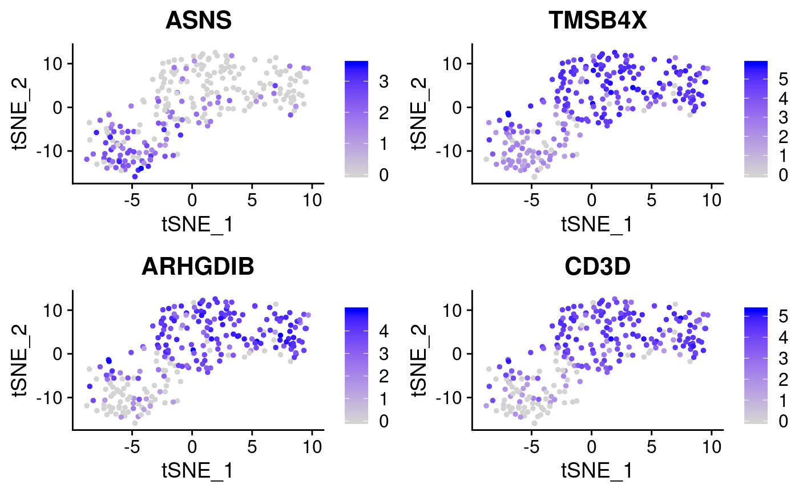

finding_markers.RmdWe base our importances on the “classification value” they give to a random forest (using the implementation in the ranger package)
So lets fit the random forest … Here we are adding the warn.imp.method to prevent a warning message sent by ranger when most of the variables are correlated with the clustering.
Please reffer to the of the importance_pvalues section in the ranger documentation when addressing this issue and for more details.
## Loading required package: Seurat## Registered S3 method overwritten by 'R.oo':
## method from
## throw.default R.methodsS3## Registered S3 method overwritten by 'GGally':
## method from
## +.gg ggplot2##
## Attaching package: 'sctree'## The following objects are masked from 'package:Seurat':
##
## FindAllMarkers, FindConservedMarkers, FindMarkersrang_importances <- ranger_importances.Seurat(
small_5050_mix,
cluster = "ALL",
warn.imp.method = FALSE)## Warning: The following arguments are not used: uniq, cells.use## Suggested parameter: cells instead of cells.useBy default, we obtain a data frame containing only importances with pvalues under 0.05.
## importance pvalue gene
## ASNS 5.455863 0 ASNS
## TMSB4X 5.442457 0 TMSB4X
## ARHGDIB 5.071372 0 ARHGDIB
## CD3D 4.285725 0 CD3D
## HEY1 3.721820 0 HEY1
## ADA 3.485990 0 ADAAs an analogous function to Seurat’s FindAllMarkers, we offer FindAllMarkers_ranger.Seurat
## Warning: The following arguments are not used: uniq, cells.use## Suggested parameter: cells instead of cells.use## importance pvalue gene cluster
## ASNS 6.243281 0 ASNS 0
## TMSB4X 4.882671 0 TMSB4X 0
## ARHGDIB 4.445874 0 ARHGDIB 0
## ADA 4.135816 0 ADA 0
## CD3D 4.000206 0 CD3D 0
## MZB1 3.479560 0 MZB1 0plot.markers <- do.call(rbind, lapply(split(markers, markers$cluster), head, 3))
FeaturePlot(small_5050_mix, unique(plot.markers$gene))
Note how variable importances can be high if a marker is either preferentially present of preferentially absent. Therefore as a pre-filtering step we implemented a modified version of seurat’s “FindMarkers”
library(Seurat)
library(sctree)
head(
sctree::FindMarkers(
small_5050_mix,
features = rownames(small_5050_mix@assays$RNA@data),
ident.1 = 0, test.use = "RangerDE"))## importance p_val gene avg_logFC pct.1 pct.2 p_val_adj
## MZB1 0.9641974 0 MZB1 2.004299 0.828 0.227 0
## CD3G 1.2004702 0 CD3G 1.849551 0.744 0.107 0
## CD3D 3.2936540 0 CD3D 1.842246 0.872 0.373 0
## ARHGDIB 2.3889365 0 ARHGDIB 1.787994 0.856 0.320 0
## AIF1 0.4203789 0 AIF1 1.759311 0.756 0.173 0
## FYB 0.8291528 0 FYB 1.750418 0.739 0.107 0markers <- sctree::FindAllMarkers(
small_5050_mix,
features = rownames(small_5050_mix@assays$RNA@data),
test.use = "RangerDE")## Calculating cluster 0## Calculating cluster 1# Here we just extract the top 3 markers for each cluster
plot.markers <- do.call(rbind, lapply(split(markers, markers$cluster), head, 3))
plot.markers## importance p_val gene avg_logFC pct.1 pct.2 p_val_adj cluster
## 0.MZB1 0.9641974 0 MZB1 2.004299 0.828 0.227 0 0
## 0.CD3G 1.2004702 0 CD3G 1.849551 0.744 0.107 0 0
## 0.CD3D 3.2936540 0 CD3D 1.842246 0.872 0.373 0 0
## 1.ASNS.1 3.7143112 0 ASNS 1.428501 0.787 0.217 0 1
## 1.CA2.1 0.4797642 0 CA2 1.297591 0.933 0.494 0 1
## 1.HEY1.1 1.1533167 0 HEY1 1.295811 0.893 0.389 0 1